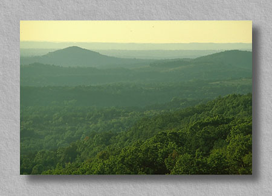

|  |
|
#173221 Ozark Vista Piney Creek Wilderness Area, Missouri This view is from atop the Pineview lookout tower along the north edge of the wilderness looking south. One of eight widerness areas in the state of Missouri, this 8,142-acre area is located in southwestern Missouri's Barry and Stone Counties on the Cassville Ranger District of the Mark Twain National Forest. The nearby city of Branson offers travelers to the region another sort of experience. |

|

|
| This site Copyright © 1998 Mike Sisk, All Rights Reserved. No form of reproduction, including copying or saving of digital image files, or the alteration or manipulation of said image files is permitted. Any unauthorized use of these images will be prosecuted to the full extent of federal copyright laws. |